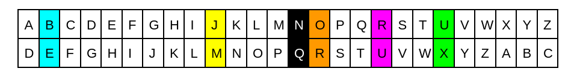

Alice et Bob sont des agents infiltrés dans un bâtiment. Malheur ! Ils ont été repérés et doivent maintenant s'enfuir et se retrouver à l’un des 172 points d’évacuation, sans que l’on puisse les retrouver. Problème : William l’espion les écoute. Ils doivent donc trouver un moyen de se mettre d’accord sur un nombre sans que William ne le connaisse.
À première vue, c’est un problème insoluble car William entend tout ce qu’ils disent. C’est pourtant rendu possible par le principe de Diffie-Hellman.
En 1976, les mathématiciens Whitfield Diffie et Martin Hellman publient une méthode d’échange de clés, c’est-à-dire des nombres qui chiffrent un message.
Par exemple : dans le code César, on chiffre un message en décalant les lettres d’un certain rang, donné par la clé. Si la clé est 3, le mot BONJOUR, le mot chiffré est ERQMRXU.

L’objectif est de permettre à Alice et Bob, discutant en public, de se mettre d’accord sur une clé secrète qu’eux seuls connaissent et pas les personnes qui les écoutent.
L’idée générale est la suivante : créer la clé grâce à une fonction mathématique de chiffrement facile à calculer mais difficilement réversible.
Une exponentielle est facile à calculer, un logarithme est difficile à calculer : c’est ce que l’on utilisera ici.
Qu’est-ce qu’une exponentielle et un logarithme ?
Lorsque l’on compte, on change de nombre. $1, 2, 3\ldots$ Avec une exponentielle, ce nombre reste le même. C’est une autre façon de compter : on garde la même base, et on lui applique un exposant que l’on fait varier. Si on prend 3 comme base, cela donne $3^1, 3^2, 3^3\ldots$
On peut étudier les fonctions puissance : $n \to n^2, n\to n^3\ldots$ mais à l’inverse, on peut fixer le nombre $n$ et faire varier la puissance. Par exemple, pour $n=2$, aura $m \to 2^m$, que l’on appelle l’exponentielle de base 2.
Un logarithme est la fonction inverse d’une exponentielle. Pour un nombre, on donne une base, et le logarithme renvoie l’exposant qui, appliqué à cette base, donne le nombre.
Par exemple :
On prend le nombre $81$. On cherche son logarithme base $3$ : la puissance à laquelle élever 3 pour obtenir 81. $81=3^4$, le logarithme en base 3 de 81 est 4.
L’espace mémoire d’un ordinateur est limité, en calculant des puissances on risque vite de dépasser la capacité maximale de la machine. Une façon de le faire, c’est de revenir à zéro au bout d’un moment.
Imaginons que le plus grand nombre possible soit 9 999. Alors, lorsque l’ordinateur fera 9998 + 3, il ne pourra pas donner le résultat. Il faudra qu’il reparte à zéro une fois la limite atteinte : pour additionner, l’ordinateur fera donc 9 999, 0, 1. On dit que l’ordinateur renvoie les résultats modulo 10 000, c’est à dire qu’il renvoie le reste de la division euclidienne du résultat par 10 000.
Par exemple : 20 modulo 14 vaut 6, 65 modulo 7 vaut 2. C’est le reste de la division euclidienne.
Quel est le rôle du calcul modulaire dans la cryptographie ?
Dans la cryptographie, le modulo agit comme un mélangeur, une roue qui tourne et qui renvoie un résultat. Par exemple, $3^{30}$ vaut environ $10^{15}$ (car $3^2$ vaut environ $10$). Nous pouvons estimer le résultat. En revanche que vaut $3^{30}$ modulo 12? Nous ne pouvons le savoir qu’en le calculant.
Comment calculer une exponentielle
Une exponentielle peut facilement se calculer à la main. Pour ce faire, prenons un exemple.
Calculons $3^{31}$ mod $30$.
On commence par décomposer l’exposant en base 2. On choisit la plus grande puissance de 2 comprise dans le plus nombre, jusqu’à se rapprocher petit à petit du nombre.
Ici :
$$31-2^4=31-16=15$$
$$15-2^3=7$$
$$7-2^2=3$$
$$3-2^1=1$$
$$1-2^0=0$$
On a donc $31 = 2^4 + 2^3 + 2^2 + 2^1 + 2^0$
Et $3^{31} = 3^{2^4 + 2^3 + 2^2 + 2^1 + 2^0}$
Et on calcule chacun de ses termes modulo 30.
$$3^2 = 9$$
$$3^4 = 9^2 = 81 = 21$$
$$3^8 = 81^2 = 6561 = 21$$
$$3^{16} = 25^2 = 625 = 25 $$
Ainsi $$3^{2^4 + 2^3 + 2^2 + 2^1 + 2^0}$$
$$= 3^{16} \times 3^8 \times 3^4 \times 3^2 \times 3^0$$
$$= 25 \times 21 \times 21 \times 9 \times 1$$
$$= 15$$
Calculons $3^{95}$ mod $172$.
On commence par décomposer l’exposant en base 2. On choisit la plus grande puissance de 2 comprise dans le plus nombre, jusqu’à se rapprocher petit à petit du nombre.
Ici :
$$95-2^6 = 95-64=31$$
$$31-2^4=15$$
$$15-2^3=7$$
$$7-2^2=3$$
$$3-2^1=1$$
$$1-2^0=0$$
On a donc $$95 = 2^6 + 2^4 + 2^3 + 2^2 + 2^1 + 2^0$$
Et $$3^{95} = 3^{2^6 + 2^4 + 2^3 + 2^2 + 2^1 + 2^0} = 3^{64} \times 3^{16} \times 3^8 \times 3^4 \times 3^2 \times 3\times 1$$
Et on calcule chacun de ses termes modulo $172$.
$$3^2 = 9$$
$$3^4 = 9^2 = 81$$
$$3^8 = 81^2 = 6561 = 25 $$
$$3^{16} = 25^2 = 625 = 109$$
$$3^{32} = 13^2 = 13$$
$$3^{64} = 169 = -3$$
Ici, on n’a pas besoin de $3^{32}$ directement, mais il nous sert à calculer $3^{64}$.
Ainsi $$3^95 = 3^{64} \times 3^{16} \times 3^8 \times 3^4 \times 3^2 \times 3^1$$
$$= -3 \times 109 \times 25 \times 81 \times 9 \times 3$$
$$= -(81^2) \times 25 \times 109$$
$$= -13 = 159$$
Exercice : calculer de la même façon $3^{83}$ mod $172$. (Résultat : $115$)
(On aurait pu le calculer plus directement avec le théorème d’Euler-Fermat)
cf. Mathraining.be
Le principe de Diffie-Hellman
Alice et Bob cherchent toujours à décider du point de rendez-vous auquel ils se retrouveront. Ils conviennent d’un nombre, en discutant à voix haute, ils disent “3”. William entend le nombre. Il s’agit donc d’une information publique : la clé publique. Ce nombre servira de base exponentielle, et William sait qu’ils vont calculer de cette façon.
Alice pense à un nombre, $a = 95$. Ce nombre est une clé privée que seule elle connaît. Bob pense à un nombre, $b = 83$. Ce nombre est une clé privée que seul lui connaît.
L’enjeu pour eux est donc de parvenir à communiquer à l’autre leur partie de la clé privée pour retrouver le point de rendez-vous, alors que ce fameux William écoute tout ce qu’ils disent.
C’est le principe de Diffie-Hellman.
Pour ce faire :
Alice dit le résultat de $3^a$. Comme on l’a calculé plus haut : $3^a =3^{95} = -13 = 159$. Bob et tous les gens autour l’entendent.
Bob fait de même : il donne le résultat de $3^b = 3^{83} = 115$.
Alice a reçu $3^b$, et élève ce résultat à la puissance $a$. Elle obtient $(3^b)^a = 3^{ba}$.
Bob a reçu $3^a$, et élève ce résultat à la puissance $b$. Il obtient $(3^a)^b = 3^{ab}$.
Alice et Bob obtiennent ainsi le même résultat !
William, qui connaît $3$, $3^a$ et $3^b$ en sachant que c’est $3$ élevé à une puissance, ne connaît par contre pas le résultat. Pour cela, il faudrait qu’il détermine $a$ et $b$ en utilisant la fonction inverse : le logarithme. Mais c’est bien plus difficile à calculer, alors pour peu que les nombres choisis soient assez grands, le calcul deviendra vraiment très compliqué et ne pourra pas être réalisé en un temps raisonnable.
Alice et Bob ont donc réussi à se communiquer le numéro du point de rendez-vous auquel se retrouver, et pourront tranquillement s’y rendre sans être dérangés par William.
Maïten Jouan, élève au Lycée Franco-Allemand de Buc
{% endblock %}